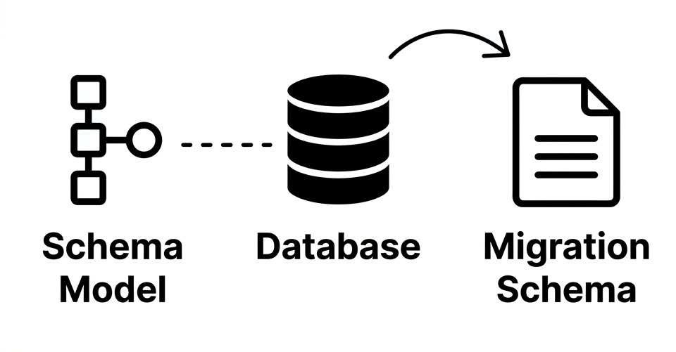
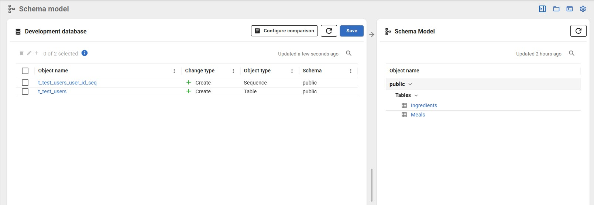
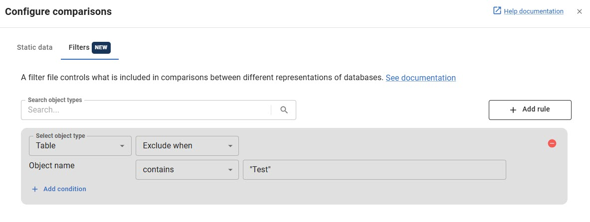

Environment-Specific Filtering in Flyway Desktop
A design exploration for Redgate
Problem and context
Flyway Desktop helps teams manage database schema changes across environments. One of the core workflows compares a schema model to a target database, and generates migration scripts from the diffs.

But some objects should only exist in certain environments. For example, tables like dbo.t_TestUsers might need to exist in Dev and Staging, but not in Prod.

dbo.t_TestUsers as a new object in Dev. This table is needed for testing but should never reach Production.Flyway's comparison filters are global. An exclude rule applies to every comparison regardless of which environment is the target. There's no way to have environment-specific filters.
This is the most-upvoted open feature request on Flyway's UserVoice board (27 votes at time of writing). The original request came from a user named Simon, where he mentioned hundreds of databases where environment-specific objects create noise in comparisons and risk in deployments.
The signal is strong given the popularity of the post: teams working at scale hit this limitation and need to exclude objects everywhere (losing visibility in lower environments) or leave it unfiltered and accept noise in Prod comparisons.
What exists today
When updating the schema model, the "Configure comparison" option allows users to set filters to include or exclude objects, or subsets of them based on properties like object name. These filters apply when generating the migration script.

The issue is that each filter is global: the filters you apply for comparing the schema model against Staging are the same ones used for Prod.
Exploration
I explored two approaches. They address the same core problem but make different trade-offs around complexity, discoverability, and how much the existing UI needs to change.
Option A: Environment tags on filter rules
Each filter gains an optional "Applies to" field where you select one or more environments. A rule tagged to Prod only applies when the comparison target is Prod. Untagged rules apply everywhere.
- Small change to the current UI.
- Simple mental model: each rule says what it does and where it applies.
- The rule list could get long. Simon had hundreds of databases, so this could devolve into a filter management problem depending on how many environment-specific filters are required.
Option B: Environment filter profiles
Instead of tagging individual rules, you create filter profiles ("Dev filters", "Prod filters") and assign them to one or more databases. When Flyway runs a comparison, it looks up which profile applies to the target and uses that rule set.
- Potentially scales better for teams with many environment-specific filters.
- Separates filter management into different areas. Increases the cognitive load to manage and maintain them, and introduces a second place to look when debugging why an object appeared or didn't in a comparison.
The direction I'd take and why
I'd start with Option A: environment tags on filter rules.
The primary reason is the small impact on UI and backwards compatibility for users. With this approach, existing customers with complex filters are unaffected. Changes are only required if a team actively needs environment-filtering. The mental model of where filters are managed remains intact.
Here's an interactive prototype of what this could look like in Flyway Desktop:
What I'd want to check before starting
- How widespread is this problem? The UserVoice post is one data point. To validate it further, I'd check support tickets and interview users to understand how prevalent it is, how painful it is, and what workarounds exist today.
- Can we surface and reference environment data in filters? Flyway already has deployment environments with IDs and display names. I'd want to confirm with Engineering that the filter system can reference them.
- How many environment-specific rules do teams need? Depending on the answer, this will impact the design direction. A few rules might be easily managed in the existing filter UI, but dozens of rules might need a different approach.
- How important is traceability? When a comparison result is missing an object, do teams need to understand why?
Reflection
What I did to understand the problem
I downloaded Flyway Desktop and set up a three-environment project (Dev, UAT, Prod) to get familiar with the workflow. I discovered SQLite isn't supported for schema model comparison, which pushed me to PostgreSQL. I created schema changes, generated migration scripts, and ran them across environments. I also reviewed Redgate's product documentation and read UserVoice requests to understand current pain points.
Assumptions I'm making
- I'm assuming Simon's request is representative of a broader pattern. It has the most votes, but I don't have access to support tickets, customer interviews, or usage analytics to confirm.
- I'm assuming that Flyway Desktop's UI is the right place to solve this, rather than exploring alternatives that may better suit different user demographics (such as CLI-heavy teams).
What I'd do with more access
As an employee of Redgate, I would start with the questions above. Specifically, I'd check for support tickets mentioning filters or environment-specific objects, interview a handful of teams that experience this friction, and review any internal research that's already been done on this problem.
I'd also want to understand the engineering constraints as soon as possible. Knowing what's feasible will shape the design direction.
Finally, I'd want to prototype the environment filter UI and test it with users.